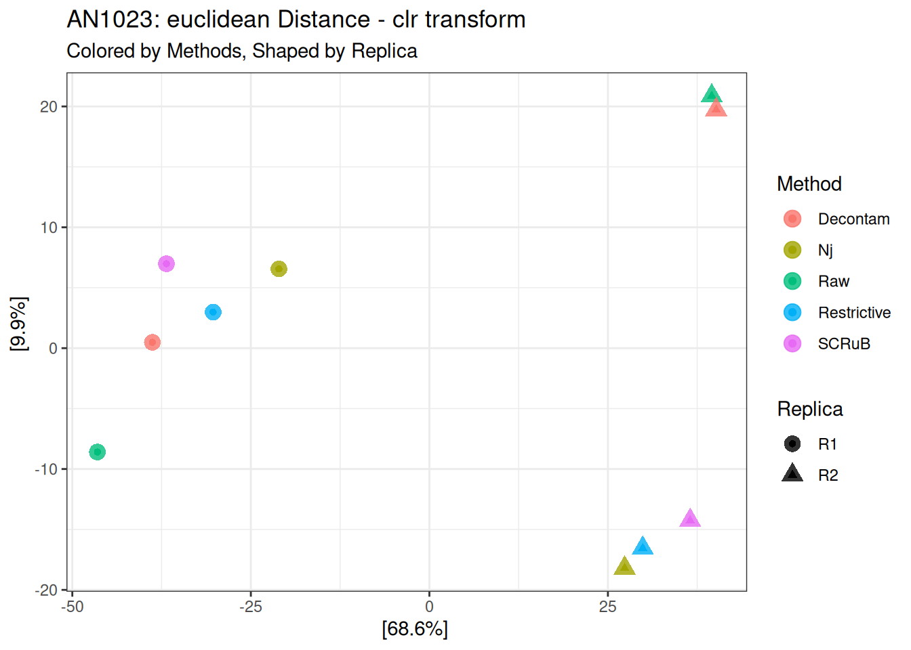
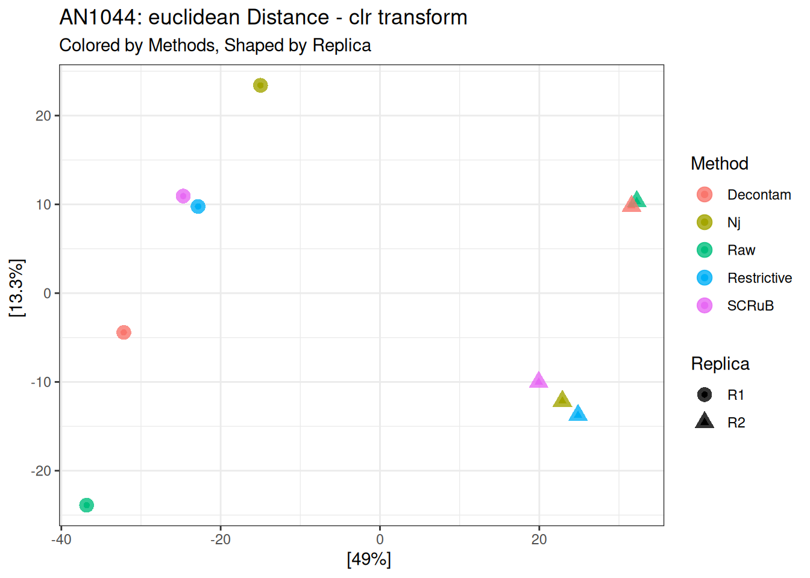
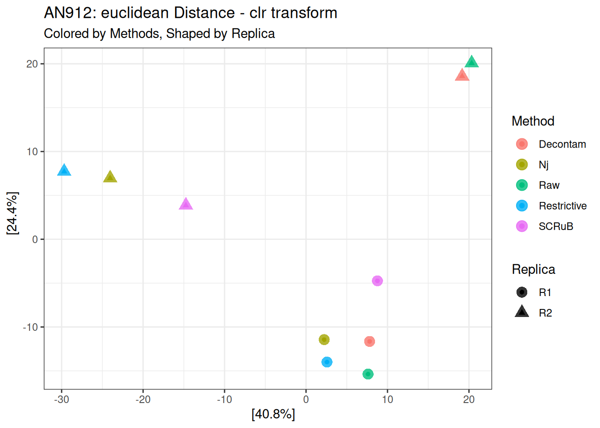
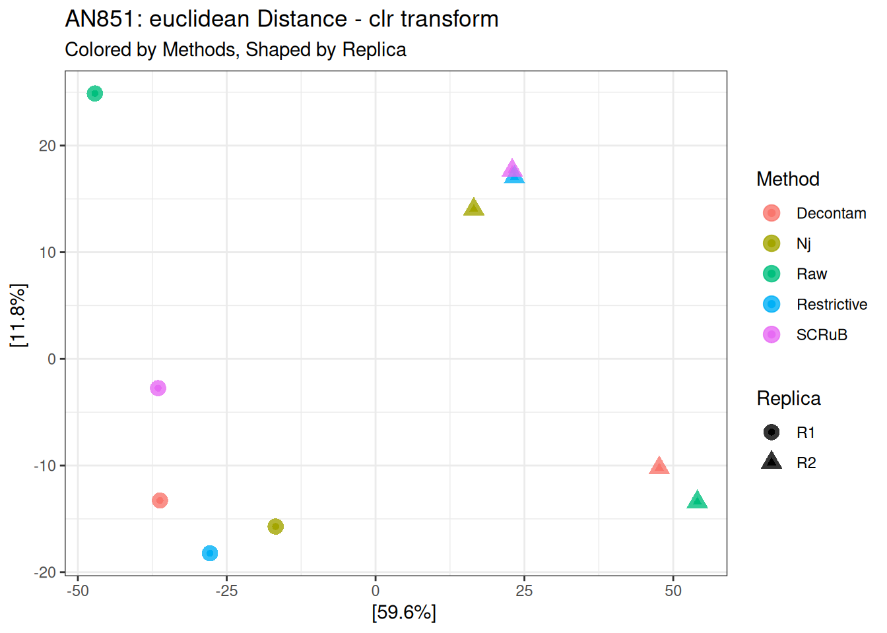
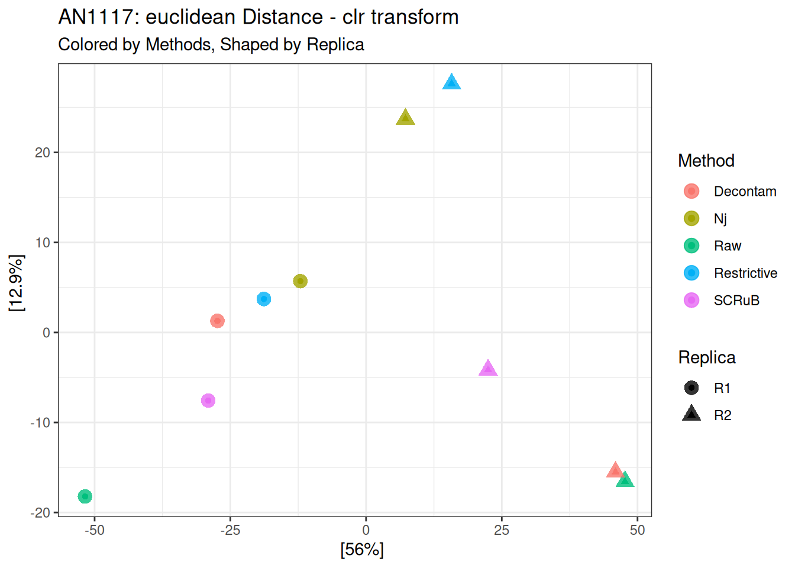
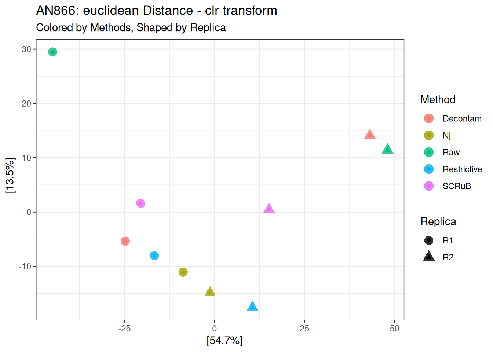
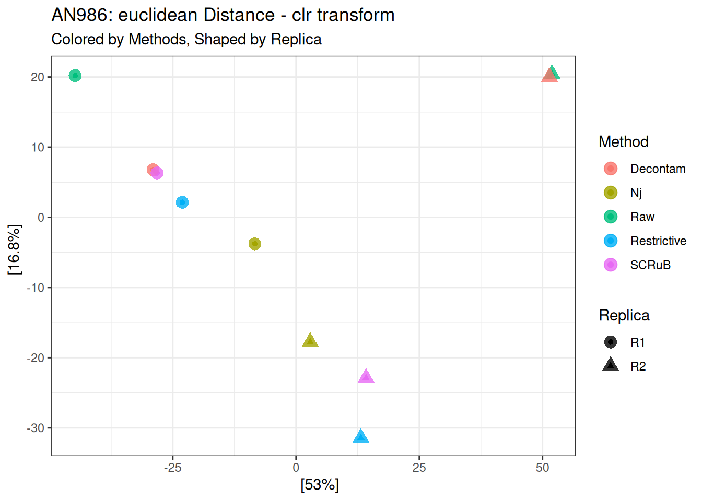
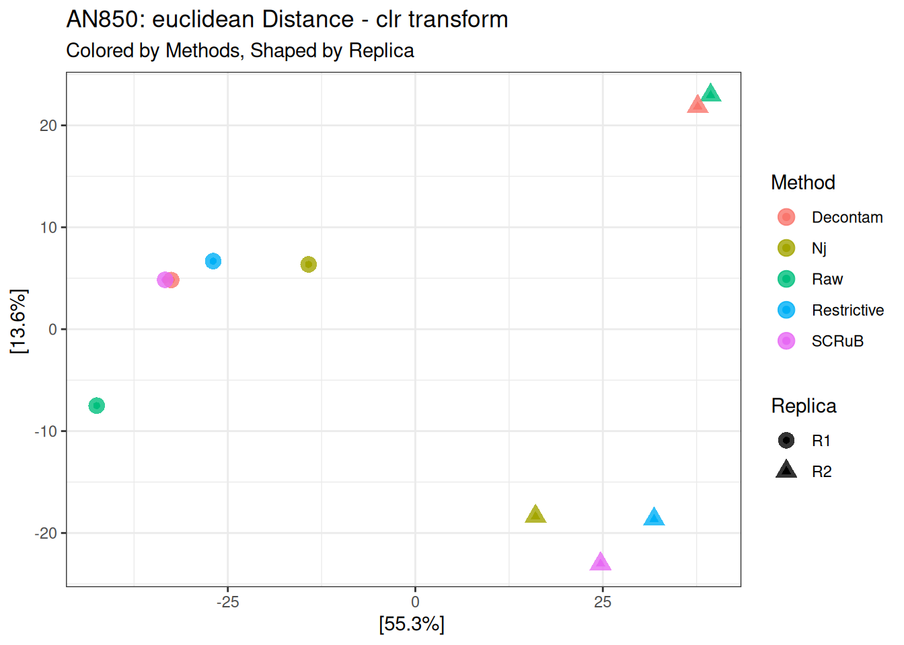

flowchart TD
%%A[Hard edge] --> B(Round edge)
%%A --> F(Others)
%%B --> C{Decision}
%%C --> D[Result one]
%%C --> E[Result two]
S(Replica Analysis) --> B(Properties of Replica)
S --> C(Overlap)
C --> C1(UpsetPlot-Phylum)
C --> C2(UpsetPlot-Class)
S --> D(Assessment)
D --> D1(1.Intra-Sample Stability)
D --> D2(2.PERANOVA)
Replica Properties
Alpha
Diversity between
Beta
Assessment
Using replica as additional dataset for assessment of decontamination approaches.
1. Intra-samples Stability
Assumption: after removing contaminants, bacterial profile of a sample should be stable, regardless of sequencing year or technician.
Method: using appropriate distance function to measure the (dis)similarity of the sample sample w.r.t 2 technical replicas. Afterwards, applying paired t-test or Wilcoxon Signed-Rank Test, LMM, or constrained permutation test.
1.1 Bray-curtis distance with compositional normalization
#### create square table, where N_i,j tell us if Method i is less than Method jpairwise_WT_Method <-function(df){## df: df_longer format --> AN_NR Methods Val m_order <-c("Nj", "Restrictive", "SCRuB", "Decontam", "Raw") all_groups <- m_order df_longer$Methods <-factor(df_longer$Methods, levels = m_order) res_upper <-pairwise_wilcox_test(data = df_longer, formula = Val ~ Methods, paired =TRUE, alternative ="less", p.adjust.method ="BH") %>%mutate(val =sprintf("%s(%s)", p.adj, p.adj.signif)) df_longer$Methods <-factor(df_longer$Methods, levels =rev(m_order)) res_lower <-pairwise_wilcox_test(data = df_longer, formula = Val ~ Methods, paired =TRUE, alternative ="less", p.adjust.method ="BH") %>%mutate(val =sprintf("%s(%s)", p.adj, p.adj.signif)) grid <-expand.grid(group1 = all_groups,group2 = all_groups,stringsAsFactors =FALSE ) full <- grid %>%left_join(res_upper %>%select(group1, group2, p_less = val), by =c("group1", "group2")) %>%left_join(res_lower %>%select(group1, group2, p_greater = val), by =c("group1", "group2")) full <- full %>%mutate(value =case_when(!is.na(p_less) ~as.character(p_less), # i < j!is.na(p_greater) ~as.character(p_greater), # i > jTRUE~NA_character_ ))# Pivot to wide format mat_df <- full %>%select(group1, group2, value) %>%pivot_wider(names_from = group2, values_from = value)# convert to matrix final_mat <- mat_df %>%column_to_rownames("group1") %>%as.matrix()return(final_mat)}
Calculate suqared p-value table
Code
tab <-pairwise_WT_Method(df_longer)print(tab)
Nj Restrictive SCRuB Decontam Raw
Nj NA "0.29(ns)" "0.263(ns)" "0.446(ns)" "0.267(ns)"
Restrictive "0.968(ns)" NA "0.481(ns)" "0.688(ns)" "0.446(ns)"
SCRuB "0.968(ns)" "0.968(ns)" NA "0.688(ns)" "0.446(ns)"
Decontam "0.968(ns)" "0.968(ns)" "0.968(ns)" NA "0.263(ns)"
Raw "0.968(ns)" "0.968(ns)" "0.968(ns)" "0.968(ns)" NA
Nj Restrictive SCRuB Decontam Raw
Nj NA "0.354(ns)" "0.354(ns)" "0.354(ns)" "0.354(ns)"
Restrictive "0.951(ns)" NA "0.408(ns)" "0.556(ns)" "0.354(ns)"
SCRuB "0.951(ns)" "0.951(ns)" NA "0.715(ns)" "0.354(ns)"
Decontam "0.951(ns)" "0.951(ns)" "0.951(ns)" NA "0.354(ns)"
Raw "0.951(ns)" "0.951(ns)" "0.951(ns)" "0.951(ns)" NA
Nj Restrictive SCRuB Decontam Raw
Nj NA "0.466(ns)" "0.413(ns)" "0.681(ns)" "0.413(ns)"
Restrictive "0.898(ns)" NA "0.413(ns)" "0.413(ns)" "0.413(ns)"
SCRuB "0.898(ns)" "0.898(ns)" NA "0.951(ns)" "0.944(ns)"
Decontam "0.898(ns)" "0.898(ns)" "0.645(ns)" NA "0.413(ns)"
Raw "0.898(ns)" "0.898(ns)" "0.898(ns)" "0.898(ns)" NA
Remark: due to the absent/present property, un.normalized and Wrench normalization give the same result.
Pairwise p-value
Code
tab <-pairwise_WT_Method(df_longer)print(tab)
Nj Restrictive SCRuB Decontam Raw
Nj NA "0.006(**)" "0.017(*)" "0.005(**)" "0.005(**)"
Restrictive "1(ns)" NA "0.054(ns)" "0.576(ns)" "0.138(ns)"
SCRuB "1(ns)" "1(ns)" NA "0.903(ns)" "0.903(ns)"
Decontam "1(ns)" "1(ns)" "0.58(ns)" NA "0.037(*)"
Raw "1(ns)" "1(ns)" "0.58(ns)" "1(ns)" NA
1.4 Aitchison - CLR transform with eucledian distance
Nj Restrictive SCRuB Decontam Raw
Nj NA "0.001(**)" "0.003(**)" "0.001(**)" "0.001(**)"
Restrictive "1(ns)" NA "0.08(ns)" "0.003(**)" "0.001(**)"
SCRuB "1(ns)" "1(ns)" NA "0.001(**)" "0.001(**)"
Decontam "1(ns)" "1(ns)" "1(ns)" NA "0.001(**)"
Raw "1(ns)" "1(ns)" "1(ns)" "1(ns)" NA
Plot for each sample
Code
plt <-sapply(IDs, FUN =function(x){samplewise_plot(pseq_merge, x, normalized ="clr", dist_metric ="euclidean")})
Code
plt[1]
$AN1023

Code
plt[2]
$AN1044

Code
plt[3]
$AN1078
Code
plt[4]
$AN1100
Code
plt[5]
$AN912

Code
plt[6]
$AN851

Code
plt[7]
$AN1117

Code
plt[8]
$AN866

Code
plt[9]
$AN986

Code
plt[10]
$AN850

Remarks: all decontamination methods seem to improve the data. Among them, Nj outperformed others.
2. PERANOVA based Approach
Linear Mixed Model: distance ~ AN_NR + Reaplica
Assumption: With high quality data, the different among samples should be explain by bacterial profile of samples, instead of replica.
Taxa order by either sum or prev. If Taxa order by sum, taxa transformation could be compositional or identity.
compbar plots for:
Nj decontamination
Overlap of decontam, SCRuB, and Nj. We obmitted the restrictive because it indiscriminately remove any taxa in NCT, which could potentially lead to remove true positive taxa.
side by side, with and without decontamination.
3.1.1 Taxa order : sum; taxa transformation: identity